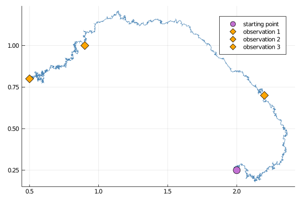
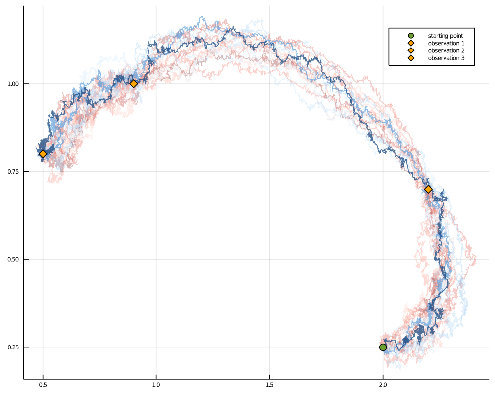

Guided proposals with multiple observations
In practice, it is often of interest to sample from some target diffusion law
conditionally on multiple, partial observations of $X$:
not only a single one. This can be done by stacking together GuidProp, each defined on its own interval $[t_{i-1},t_{i}]$ and for its own terminal observation $V_{t_i}$. The initialization may be done implicitly if you call
GuidedProposals.build_guid_prop — Functionbuild_guid_prop(
::Type{AuxLaw}, recording::NamedTuple, tts::Vector, args...
) where {AuxLaw <: DD.DiffusionProcess}Initialize multiple instances of GuidProp corresponding to guided proposals for observations stored in recording. The time grids for each inter-observation interval is given in tts and AuxLaw is the auxiliary law for creating guided proposals. args... are passed to each constructor of GuidProp.
build_guid_prop(
aux_laws::AbstractArray, recording::NamedTuple, tts::Vector, args
)Same as a version with ::Type{AuxLaw}, but aux_laws is a list of auxiliary laws that correspond to each inter-observation interval.
For instance:
observs = load_data(
ObsScheme(
LinearGsnObs(
0.0, zero(SVector{2,Float64});
Σ = 1e-4*SDiagonal(1.0, 1.0)
)
),
[1.0, 2.0, 3.0],
[[2.2, 0.7], [0.9, 1.0], [0.5, 0.8]]
)
recording = (
P = P_target,
obs = observs,
t0 = 0.0,
x0_prior = undef # normally, we would provide a prior, however for the steps
# below it is not needed
)
tts = OBS.setup_time_grids(recording, 0.001)
PP = build_guid_prop(LotkaVolterraAux, recording, tts)where we have packaged the observations in a format of a recording from ObservationSchemes.jl
It is possible to perform the steps hidden behind a call to build_guid_prop explicitly. To properly initialize the guiding term we must defined the sequence of GuidProp starting from the last interval $[t_{N-1},t_{N}]$ and proceed moving backwards: $[t_{N-2},t_{N-1}],\dots,[0,t_{1}]$, each time passing a GuidProp from the subsequent interval $[t_{i},t_{i+1}]$ to the GuidProp that is being defined on $[t_{i-1},t_{i}]$. For the observations above this becomes:
P_intv3 = GuidProp(tts[3], P_target, LotkaVolterraAux, observs[3])
P_intv2 = GuidProp(tts[2], P_target, LotkaVolterraAux, observs[2]; next_guid_prop=P_intv3)
P_intv1 = GuidProp(tts[1], P_target, LotkaVolterraAux, observs[1]; next_guid_prop=P_intv2)That's it, now a vector
P = [P_intv1, P_intv2, P_intv3]is equivalent to PP defined before. Needless to say, calling build_guid_prop instead is recommended.
Sampling a single trajectory
Sampling is done analogously to how it was done for a case of a single observation. Simply call rand if you wish to have containers initialized in the background:
# sample
XX, WW, Wnr = rand(PP, y1)
# build a plot
p = plot()
for i in 1:3
plot!(p, XX[i], Val(:x_vs_y); color="steelblue",label="")
end
scatter!(p, [y1[1]],[y1[2]], markersize=8, label="starting point")
for i in 1:3
o = OBS.obs(recording.obs[i])
scatter!(p, [o[1]], [o[2]]; label="observation $i", markersize=8, marker=:diamond, markercolor="orange")
end
display(p)
Alternatively, initialize containers yourself and then call rand!:
XX, WW = trajectory(PP)
rand!(PP, XX, WW, y1)Sampling multiple trajectories
As it was the case with single observation, sampling multiple trajectories often involves computation of the log-likelihood. Analogously to how it was explained in the previous section, there are three ways of computing log-likelihood and the preferred way is to use the optimized rand! samplers that compute log-likelihoods as the path is being sampled.
success, ll = rand!(PP, XX, WW, Val(:ll), y1)Smoothing is now as simple as it was for a single observation. In fact, thanks to the magic of Julia's multiple dispatch we may call the exact same function simple_smoothing that was defined in the previous section and it will work for multiple observations as well!
paths = simple_smoothing(P, y1)
A log-likelihood computed by rand! for a list of trajectories is slightly different than the log-likelihood computed for a single segment. An additional term due to transition densities is added. See the section on log-likelihoods for more details.
Preconditioned Crank-Nicolson scheme
Perturbing Gaussian noise instead of sampling it anew works in exactly the same way as in the previous section.
XX°, WW° = trajectory(PP)
ρρ = [0.5, 0.8, 0.4] # one memory param for each interval
rand!(PP, XX°, WW°, WW, ρρ, y1)